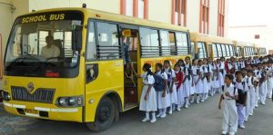
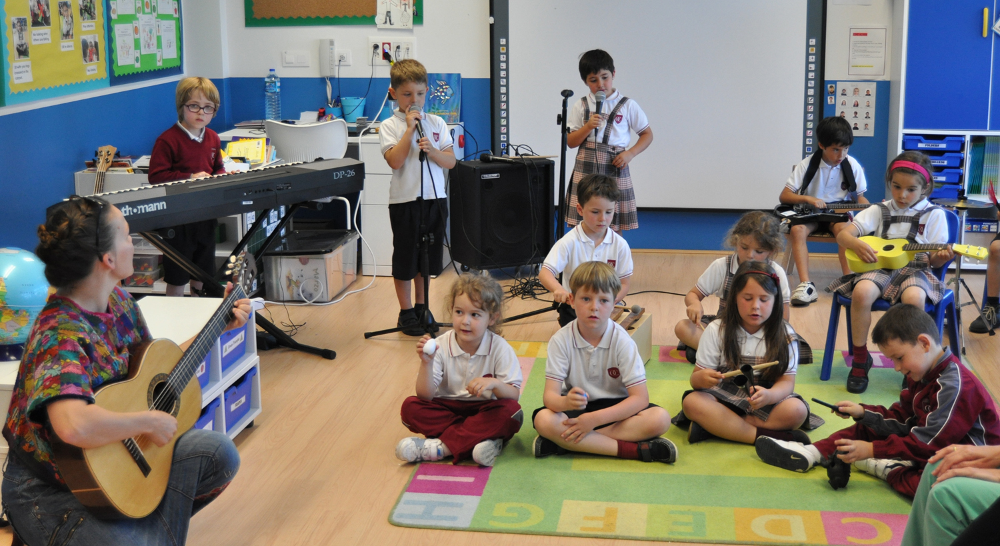
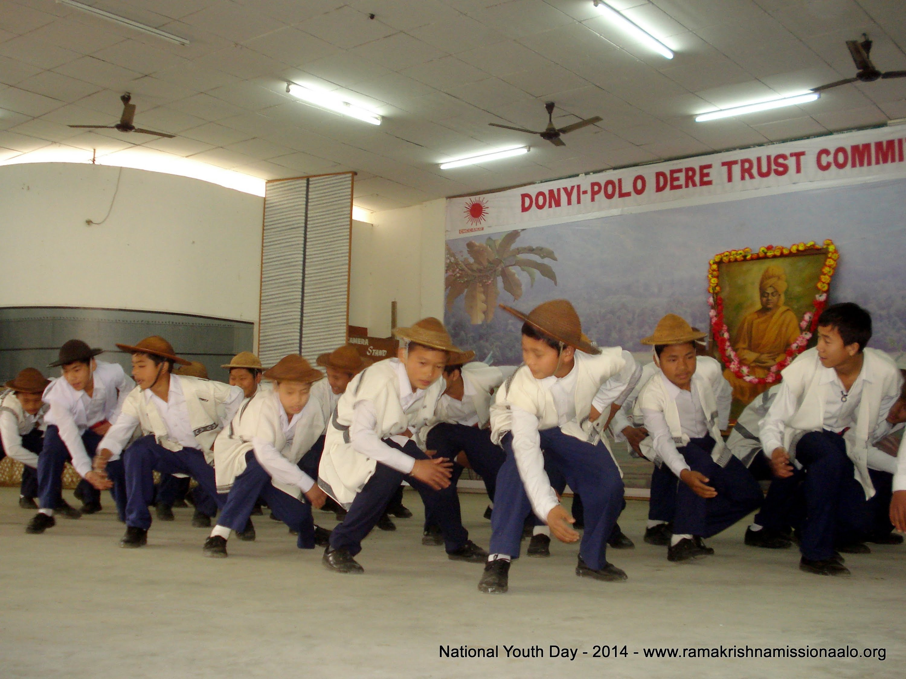
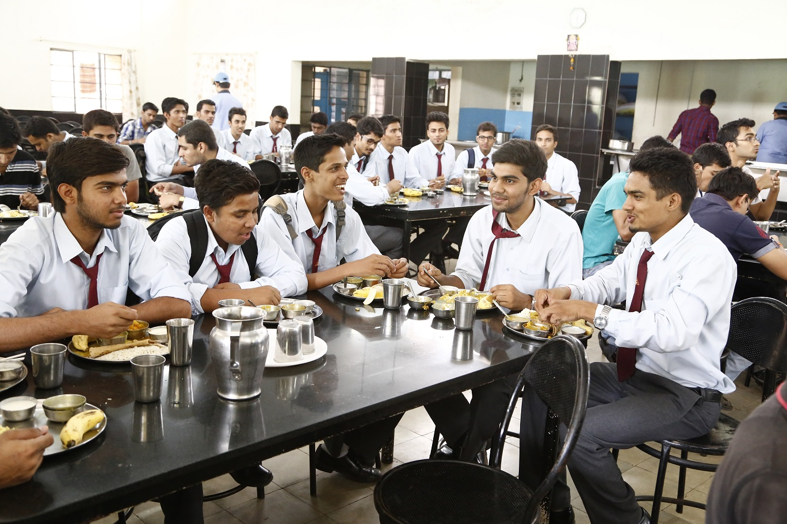
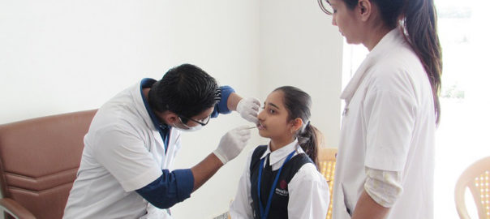

 One of the banes of the development of a city is the growing distance between the school and the residence of the students. Commuting becomes a problem due to irregular frequency of a public transport as well as the concern for safety during travel. Rainbow school therefore, has made elaborate arrangements for the safe conveyance of day scholars. The bus fleet covers the entire city and thereby makes it convenient for parents to send their children to school on time and comfortably. This not only ensures a safe journey but also makes the travel to school and back home very interesting. Within the school premises the student's safety and security is ensured through the vigil provided by the well trained team of a private security agency that ensures that there is no trespassing.
 Every hour of the stay is a new learning experience. It would be much better to show significant involvement, leadership, and personal development in two or three activities than it would be to write about ten activities that you were hardly involved in because you spread yourself too thin. While the academics, sports and cultural activities are aimed at the personality development of the child, activities in the premises like celebration of various festivals and occasions of national importance teach moral values and integrity.
The hostel is truly a model for nurturing a sound body and steady mind for the students. It is self-sufficient in all respects and geared to take care of every need of the student.The various kinds of services provided for the students inside the hostel premises itself are as below:
 The hostel has an airy and versatile hall, which is used for various purposes. It serves as a Dining Hall, Prayer Hall as well as a Performance Hall for various extra-curricular and co-curricular activities of the hostel.
 The hostel mess caters to all the food and nutritional requirements of the students. They are served a well-balanced veg and non-veg diet along with milk at the hostel. The menu for all meal sessions is changed regularly to provide variety and wholesome nourishment.
 The health of the children is adequately watched over in the hostel. It has a well-equipped dispensary under the care of Medical Practitioner The students are periodically examined , Also the services of the General and the Super-Speciality Hospitals, which are located in the vicinity, are extended to the inmates of the hostel whenever necessary. There is also a separate Sick Ward Pantry to prepare special diets as per doctor's advice for students not keeping good health.